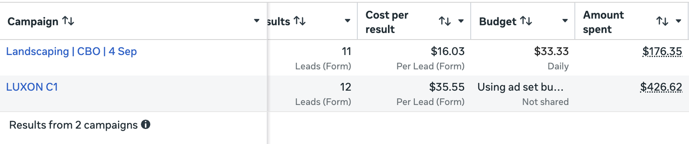
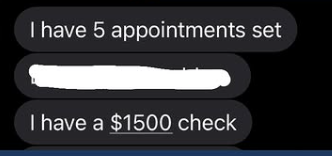
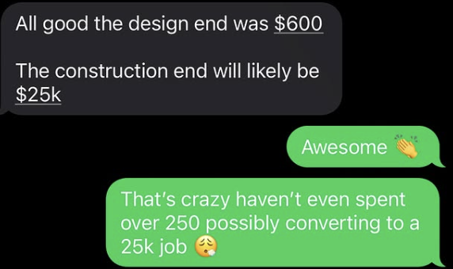

Watch this before we talk.
Ninety seconds. Captions are burned in, so it plays on mute.
Click to skip to resultsWhat actually happens on it.
Thirty five minutes. Four things, in this order.
We ask what you have already tried, and where it broke down
Most people here have run ads before. We want the part that did not work.
We fill in your numbers, not ours
The maths only means something with your figures in it.
You get a straight answer on whether this works for your trade
Some trades are harder than others. You will hear which yours is.
If we are not a fit, we say so on the call
You will not be chased for a month afterwards.
Three things to have ready.
Close enough is fine.
A few of the accounts we're running.
One account, one date window, the export beside it. Nothing is added up.
That is the whole spend, not a good week pulled out of it.

The trade pays twenty five to forty five a lead. This one sits under it.

Same account, as of 19 Sep: 50 leads. The figures above are the 13 Aug to 2 Sep window they were exported from.
$14,000 in revenue so far, confirmed by the client. Client reported. Meta cannot see closed jobs.
Two campaigns. The one rebuilt on 4 Sep runs at $16.03 a lead. First job closed in week one.

Over $80,000 of work in the pipeline, confirmed by the client. Client reported. Meta cannot see closed jobs.
A few examples of what we do.
All shot on location at a client's job. No stock.
Conversion tracking is wired back to Meta, so the budget follows the ads that book work.
What people say.



Your call is confirmed.
It is in the diary. Nothing else to do before then.
Add to Google CalendarOpens Google Calendar with your time already filled in.
If something comes up, use the reschedule link in your confirmation email rather than skipping it.
Something come up? Move the call rather than skipping it. A new time beats a no show, every time.